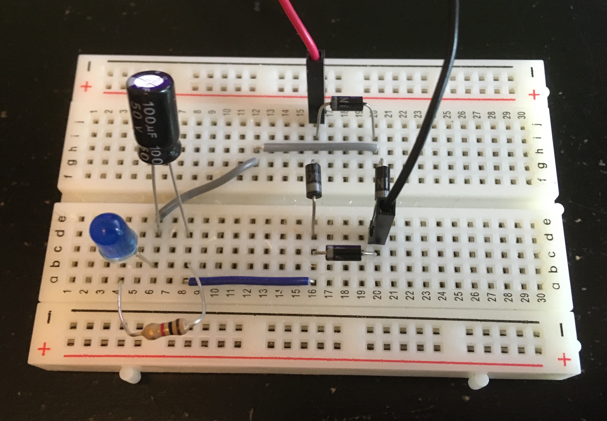

Introduction
In electronics, rectifiers are used to convert alternating current (AC) to direct current (DC). DC is easier to understand as it is the way, current flow is traditionally explained. Electrons flow from one terminal to the other, in the process powering whatever load the circuit may demand. Conventionally this flow of electrons is from the positive terminal to the negative terminal, but in actuality electrons are attracted to the positive terminal and repelled by the negative terminal. To my knowledge, all control electronics rely on direct current for operation. DC can be supplied by batteries, but if you're planning to power your circuit from a wall outlet you're going to need to rectify that AC before allowing current to flow through your circuit. Typically, DC is visualized as a flat line of positive voltage. In reality, this is not always the case. Noise in the circuit can produce little oscillations about this flat voltage line generating ripple in the supply current. This is a common concern when using switching power supply circuits such as DC-DC voltage converters.
On the other hand, AC is not so intuitive. Instead of flowing in one direction, electrons are pulled back and forth through the circuit at a fast rate. This is accomplished by reversing the voltage—the force pushing or pulling the electrons—from positive to negative. In the home, wall outlets are commonly understood to have a voltage of 120V and alternate at a frequency of 60 Hz. 120V is the root-mean-square (RMS) voltage of the AC source, while the voltage is actually oscillating back and forth between -170V and +170V. RMS voltage is basically a convenient metric for measuring the magnitude of alternating current in a way that is comparable with direct current. As the name would suggest, one could calculate the RMS voltage by recording at high resolution one period of oscillation of the AC signal, squaring each value, averaging them, and taking the square root. DC at the RMS voltage level would effectively have the same impact on the circuit as the AC voltage in terms of power dissipation. AC is used to transport energy over long distances such as over power lines since it is more efficient than DC. Additionally, wireless chargers rely on AC to induce currents in wires separated in space. Typically, AC is visualized as a sinusoidal wave centered about zero voltage. This a valid representation of the current flowing from the wall outlet, but again may be suscepitble to noise.
The most typical method for rectifying AC to DC is to use what is called a full bridge rectifier. Behind an intimidatingly long name lies a relatively simple concept relying just on some diodes to restrict voltage flow in one direction.
iPhone Camera Settings

Required Supplies
Capacitor Explodes Under Reverse Voltage
Single Diode Rectifier
No Smoothing Capacitors

Circuit Schematic: Single Diode Rectifier

Breadboard Circuit: Single Diode Rectifier
Single Diode Rectifier - Real Time
Single Diode Rectifier - Slow Motion (1/4 speed)
In the below video, I took one second of video from the slow motion clip and slowed it down 5 times further in iMovie. Looking at the clip, one can count 7 flashes of the LED. Since the slow motion video from the iPhone is played back at 1/4 speed, this means that the true duration of the clip below is only a quarter second. If the LED flashed 7 times in a quarter second, it would flash approximately 28 times in one second. This checks out as we expect the half-wave signal coming through the single diode rectifier from the 60 Hz wall outlet AC source to have a frequency of 30 Hz. There's some error given the small period of time I chose to examine. If I examine a longer interval, the error should decrease. Repeating the same process, but this time for a 2 second clip from the slow motion video, I counted 15 flashes of the LED. 15 flashes over half a second would result in exactly 30 Hz.
Single Diode Rectifier - Super Slow Motion (1/20 speed)
One Smoothing Capacitor

Circuit Schematic: Single Diode Rectifier with One Capacitor

Breadboard Circuit: Single Diode Rectifier with One Capacitor
Single Diode Rectifier with One Smoothing Capacitor - Real Time
Single Diode Rectifier with One Smoothing Capacitor - Slow Motion (1/4 speed)
Single Diode Rectifier with One Smoothing Capacitor - Super Slow Motion (1/20 speed)
Many Smoothing Capacitors

Circuit Schematic: Single Diode Rectifier with Many Capacitors

Breadboard Circuit: Single Diode Rectifier with Many Capacitors
Single Diode Rectifier with Many Smoothing Capacitors - Real Time
Single Diode Rectifier with Many Smoothing Capacitors - Slow Motion (1/4 speed)
Single Diode Rectifier with Many Smoothing Capacitors - Super Slow Motion (1/20 speed)
Environmental Light
All Environmental Light - Slow Motion (1/4 speed)
Computer Monitors Light - Slow Motion (1/4 speed)
Room Light - Slow Motion (1/4 speed)
If you counted flicker frequency as the frequency of the edges, then it would be two times the signal frequency.
Room Light - Super Slow Motion (1/40 speed)
Full Bridge Rectifier
No Smoothing Capacitors
Circuit Schematic: Full Bridge Rectifier

Breadboard Circuit: Full Bridge Rectifier
Full Bridge Rectifier - Real Time
Full Bridge Rectifier - Slow Motion (1/4 speed)
In the below video, I took one second of video from the slow motion clip and slowed it down 10 times further in iMovie. Looking at the clip, one can count 15 flashes of the LED. Since the slow motion video from the iPhone is played back at 1/4 speed, this means that the true duration of the clip below is only a quarter second. If the LED flashed 15 times in a quarter second, it would flash approximately 60 times in one second. This checks out as we expect the full-wave signal coming through the full bridge rectifier from the 60 Hz wall outlet AC source to also have a frequency of 60 Hz.
Full Bridge Rectifier - Super Slow Motion (1/40 speed)
One Smoothing Capacitor

Circuit Schematic: Full Bridge Rectifier with One Capacitor
Breadboard Circuit: Full Bridge Rectifier with One Capacitor
Full Bridge Rectifier with One Smoothing Capacitor - Real Time
Full Bridge Rectifier with One Smoothing Capacitor - Slow Motion (1/4 speed)
Full Bridge Rectifier with One Smoothing Capacitor - Super Slow Motion (1/40 speed)
Many Smoothing Capacitors

Circuit Schematic: Full Bridge Rectifier with Many Capacitors
Breadboard Circuit: Full Bridge Rectifier with Many Capacitors
Full Bridge Rectifier with Many Smoothing Capacitors - Real Time
Full Bridge Rectifier with Many Smoothing Capacitors - Slow Motion (1/4 speed)
Full Bridge Rectifier with Many Smoothing Capacitors - Super Slow Motion (1/40 speed)